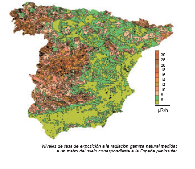
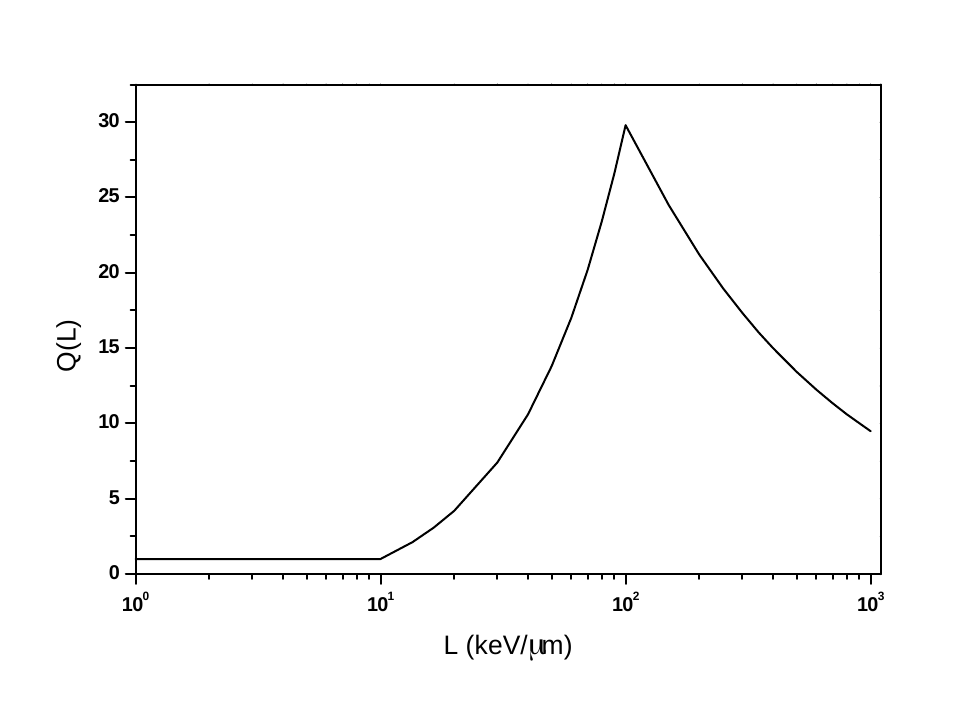
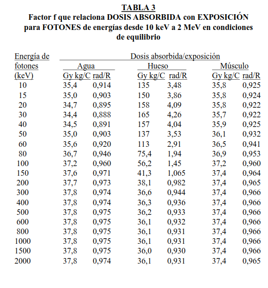
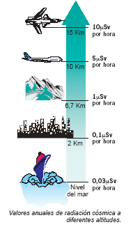
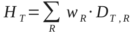
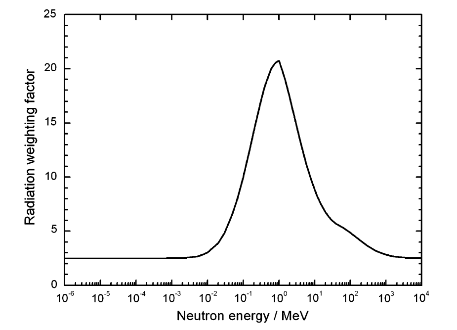
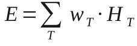
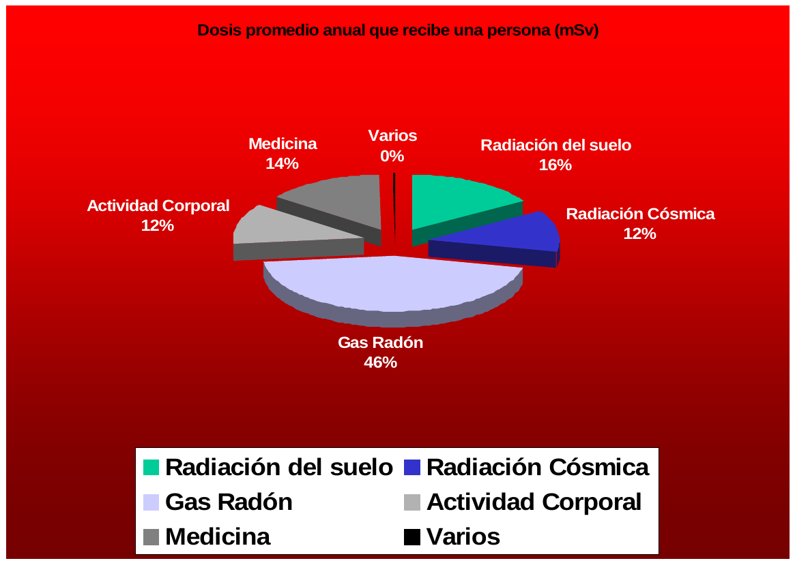
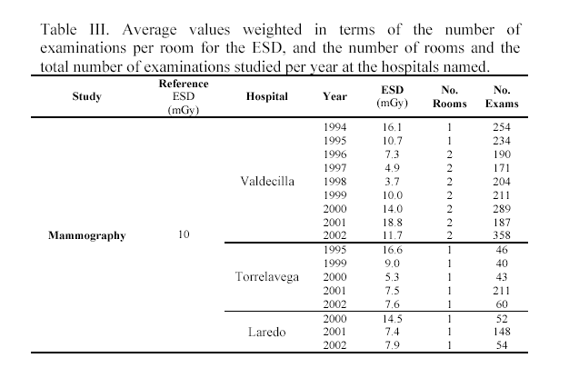
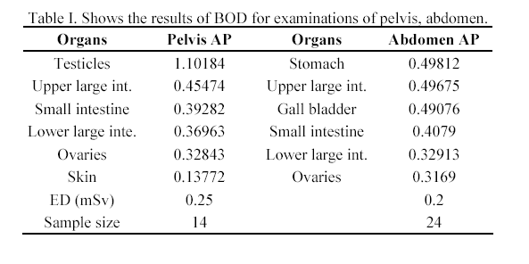

Formación de Residentes en P.R., Complejo Asistencial de Zamora, Nov. 2026
1
INTRODUCCIÓN HISTÓRICA
•1875.- Creación del BIMP para la normalización de los sistemas de magnitudes y unidades.
•1895.- Descubrimiento de los rayos X por W. C. Roentgen.
•1896.- Descubrimiento de la radiactividad por H. Becquerel (rayos uránicos - radiación emitida espontáneamente por sales de Uranilo).
•1922.- Estudios epidemiológicos en radiólogos establecen que la incidencia de cáncer es más alta que en otros médicos.
•1925.- Se crea la ICRU (Comisión Internacional de Unidades de Medida y Radiación) .
•1928.- Creación del Comité Internacional de Protección contra los Rayos X y el Radio. (Más tarde ICRP).
•1937-1952.-La Guerra Mundial supone una interrupción total en materia de Protección contra las radiaciones ionizantes.
•1953-1962.
–Se crea la ICRP (Comisión Internacional de Protección Radiológica). Encargada de elaborar fundamentos y recomendaciones en materia de protección radiológica .
Formación de Residentes en P.R., Complejo Asistencial de Zamora, Nov. 2026
2
INTRODUCCIÓN HISTÓRICA (II)
•1976.- Publicación ICRP 26: Sistema de Limitación de Dosis .
•1990.- Publicación ICRP 60. Nuevas recomendaciones en materia de Protección Radiológica.
•1996.- Directiva Europea. (96/29 EURATOM) “Normas Básicas de Protección Sanitaria de los Trabajadores y la Población contra los riesgos que resultan de las Radiaciones Ionizantes”.
•2001.- Real Decreto 783/2001. “Reglamento sobre Protección Sanitaria contra Radiaciones Ionizantes”. (Transposición de la directiva europea 96/29 EURATOM).
•2007.- Publicación ICRP-103. Nuevas recomendaciones en materia de Protección Radiológica.
•2010.- Publicación ICRP-116. Coeficientes de conversión para magnitudes de protección radiológica para exposiciones con radiación externa.
•2020.- Publicación ICRP-144. Coeficientes de dosis para exposición externa a fuentes de radiación ambiental.
•2022.-Real Decreto 1029/2022, de 20 de diciembre, por el que se aprueba el Reglamento sobre protección de la salud contra los riesgos derivados de la exposición a las radiaciones ionizantes.
Formación de Residentes en P.R., Complejo Asistencial de Zamora, Nov. 2026
3
GENERALIDADES SOBRE MAGNITUDES (I)
•MAGNITUD.
–Cualquier característica o propiedad de un cuerpo que se puede medir.
•MEDIDA.
–La evaluación concreta de la magnitud.
•UNIDAD.
–Patrón de medida. Referencia para establecer el valor de la magnitud.
•SISTEMA DE UNIDADES.
–Conjunto reducido de unidades patrón de magnitudes fundamentales sujetas a ciertos criterios generales, de las cuales derivan las demás magnitudes.
SISTEMA INTERNACIONAL O MKS
Basado en 7 magnitudes fundamentales
•Longitud (metro)
•Masa (Kilogramo)
•Tiempo (segundo)
•I.Corriente (amperio)
•Temperatura (kelvin)
•I.Luminosa (candela)
•Cantidad de sustancia (mol)
•La legislación europea prescribe el 1 de enero de 1986 que en las mediciones radiológicas se usen obligatoriamente las unidades del Sistema Internacional de medidas.
Formación de Residentes en P.R., Complejo Asistencial de Zamora, Nov. 2026
4
GENERALIDADES SOBRE MAGNITUDES (II)
CLASIFICACIÓN DE LAS MAGNITUDES RADIOLÓGICAS
•RADIOMETRÍA.
–Magnitudes asociadas a un campo de radiación. (fluencia y flujo de energía y de partículas, energía radiante,...).
•COEFICIENTES DE INTERACCIÓN.
–Magnitudes asociadas a la interacción de la radiación con la materia. (coeficiente de atenuación másico, lineal, sección eficaz, ...).
•DOSIMETRÍA.
–Magnitudes relacionadas con la medida de la energía absorbida y de su distribución. Derivan de las dos anteriores. (Dosis absorbida, Kerma, LET,..)
•RADIACTIVIDAD.
–Magnitudes asociadas con el campo de radiación producido por determinadas sustancias.
•RADIOPROTECCIÓN.
–Magnitudes relacionadas con los efectos biológicos producidos por las radiaciones en determinados órganos o tejidos.
Formación de Residentes en P.R., Complejo Asistencial de Zamora, Nov. 2026
5
RADIACTIVIDAD
ACTIVIDAD
Actividad de una cantidad de un radionucleido en un determinado estado energético es el cociente:
dN: valor esperado del nº de transiciones nucleares espontáneas (desintegraciones) que se producen.
dt = intervalo de tiempo
Unidad especial : Curio (Ci). Es un patrón de masa ( actividad de 1 gramo de Ra-226 en condiciones normales de laboratorio).
Unidad del S.I. : Becquerelio ( s-1) (Bq).
- 1 Bq = 1 transformación por segundo. 1 d.p.s. (s-1). Se utilizan múltiplos:
MegaBecquerelio(MBq) = 106 Bq
KiloBecquerelio(KBq) = 103 Bq
- 1 Ci = 3.7 x 1010 Bq. Se utilizan submúltiplos de la unidad:
NanoCurio (nCi) = 10-9 Ci = 37 Bq;
MicroCurio (μCi) = 10-6 Ci = 37.000 Bq = 37 KBq
A = dNdt
Formación de Residentes en P.R., Complejo Asistencial de Zamora, Nov. 2026
6
MAGNITUDES EN DOSIMETRÍA (I)
EXPOSICIÓN
Unidad especial : Roentgen (R).
Unidad del S.I. : Culombio/Kilogramo (C/Kg)
Es la exposición producida por un haz de radiación X ó γ que absorbido en 1 Kg. de masa de aire seco en condiciones normales de presión y temperatura, libera 1 culombio de carga de cada signo.
Relación entre unidades antiguas y del S.I.
- 1 C / Kg. = 3876 R
- 1 R = 2.58x10-4 C / Kg.
Exposición es el cociente:
dQ es la carga total de los iones de un solo signo producidos en aire, cuando todos los e- liberados por los fotones absorbidos en la masa dm hayan sido detenidos completamente en el seno del aire
X = dQdm
Formación de Residentes en P.R., Complejo Asistencial de Zamora, Nov. 2026
7
MAGNITUDES EN DOSIMETRÍA (II)
EXPOSICIÓN (Observaciones)
•Se definió antes la unidad (Roentgen) que la propia magnitud.
•Hace referencia únicamente al poder de ionización de la radiación X ó γ en un medio específico (aire).
•El efecto medido (ionización en aire) es de escaso interés para el estudio de los efectos producidos por las radiaciones en los tejidos.
•Existen problemas de medición de la exposición para energías de fotones de unos pocos keV y por encima de varios MeV (difícil mantener en estas situaciones condiciones de equilibrio).
•Es una magnitud de paso hacia la Magnitud Dosis Absorbida .
•Dificultad de utilizar la unidad del SI (C/Kg) por su gran dimensión y difícil relación con el Roentgen (R).
Formación de Residentes en P.R., Complejo Asistencial de Zamora, Nov. 2026
8
MAGNITUDES EN DOSIMETRÍA (III)
Representa la variación de la exposición dX en un intervalo de tiempo dt
Unidad especial : R/s (Roentgen /segundo)
Se utilizan submúltiplos :
R/h, mR/h , μR/h
Unidad S.I.:C/Kg·s (Culombio / Kilogramo•s )
Apenas se utiliza en la práctica por su desmesurada dimensión.
Ejemplo: Niveles medios de tasa de exposición a la radiación gamma natural en nuestro país . (Proyecto MARNA - CSN)
TASA DE EXPOSICIÓN
X = dXdt

Datos: C.S.N.
Niveles medios de tasa de exposición a la radiación gamma natural en España
Formación de Residentes en P.R., Complejo Asistencial de Zamora, Nov. 2026
9
MAGNITUDES EN DOSIMETRÍA (IV)
DOSIS ABSORBIDA
Dosis absorbida es el cociente:
Donde dε es la energía media impartida por la radiación ionizante y absorbida en una cantidad de masa dm de un material específico.
Unidad especial: Rad.
Unidad del S.I. : Gray (Gy).(J/Kg)
1mGy = 10-3 Gy; 1 μGy= 10-6 Gy.
Relación entre unidad especial y unidad del S.I.
- 1 Gray = 100 rad - 1 rad= 10-2 Gy = 1cGy
TASA DE DOSIS ABSORBIDA
Variación de la dosis absorbida dD en un pto. de un material en un intervalo de tiempo dt.
Unidad especial: rad / s
- Se utilizan submúltiplos
rad/h; mrad/h.
Unidad del S.I. : Gy / s
- Se utilizan submúltiplos :
mGy/h; μGy/h.
D = dεdm
D = dDdt
Formación de Residentes en P.R., Complejo Asistencial de Zamora, Nov. 2026
10
MAGNITUDES EN DOSIMETRÍA (IV)
DOSIS ABSORBIDA (Observaciones)
•Es la magnitud dosimétrica de mayor interés.
•Hace referencia a la energía impartida por la radiación ionizante de cualquier tipo y absorbida en un punto de un material específico.
•El efecto medido es de gran interés para estudios de radiobiología y protección contra las radiaciones.
•Fácil relación entre las unidades antiguas y las del S.I.
•Es una magnitud que se relaciona de forma sencilla con otras magnitudes (Exposición , Dosis Equivalente, etc.) .
•Es el pilar básico para el cálculo de las magnitudes limitadoras y operacionales .
Formación de Residentes en P.R., Complejo Asistencial de Zamora, Nov. 2026
11
MAGNITUDES EN DOSIMETRÍA (V)
Transferencia Lineal de Energía (LET , LΔ )
Unidad del S.I. : J/m
- Otras unidades: keV/μm , eV/m, MeV/m
Consideraciones generales:
El LET tiene gran importancia el Radiobiología y Radioprotección, pues sirve de base para el cálculo de los factores que ponderan la calidad de radiación en la evaluación del daño biológico . En nuestro reglamento se considera la Transferencia Lineal de Energía no restringida (L∞Si se consideran todas las colisiones en la pérdida de energía, LΔ = L∞y el medio específico es Agua)
ES LA MAGNITUD DE PASO A LA DOSIS EQUIVALENTE
Es la energía disipada por una partícula cargada al atravesar una longitud dl en todas aquellas colisiones con e- en las que la pérdida de energía es < Δ).

Factor de Calidad Q en función del LET
LΔ = dEdl
Formación de Residentes en P.R., Complejo Asistencial de Zamora, Nov. 2026
12
RELACIÓN ENTRE MAGNITUDES
RELACIÓN ENTRE EXPOSICIÓN Y D.ABSORBIDA
D: Dosis absorbida en un pto. de un material
X: Exposición .
f: factor de relación entre X y D.
f está tabulado para distintos materiales y energías. (Tabla 3)
f es aproximadamente 1 para todas las energías cuando el material irradiado es tejido blando y se utilizan las unidades antiguas.(rad, R).

D = f·X
Formación de Residentes en P.R., Complejo Asistencial de Zamora, Nov. 2026
13
MAGNITUDES EN RADIOPROTECCIÓN (I)
EQUIVALENTE DE DOSIS EN UN PUNTO
D= Dosis absorbida en un pto. de un material
Q = factor de calidad de la radiación.
Factor de calidad Q .- Q es una constante adimensional que pondera la efectividad biológica de la calidad de radiación . (Se calcula observando la distribución de la energía a nivel microscópico : LET).
Unidad especial: Rem (*).
Unidad SI : J/Kg. Sievert (Sv). (*)
Relación entre ambas unidades:
1 Sv = 100 rem
(*) Al ser Q una constante sin dimensión, la unidad de dosis equivalente del SI es también J/kg .
Para distinguir las unidades de Equivalente de Dosis, H, de las de Dosis Absorbida , se utilizan nombres propios diferentes (Sievert y Gray respectivamente).
H = D·Q
Formación de Residentes en P.R., Complejo Asistencial de Zamora, Nov. 2026
14
MAGNITUDES EN RADIOPROTECCIÓN (II)
Variación del equivalente de dosis dH en el intervalo de tiempo dt
Unidad especial: rem/s.
(Se utilizan submúltiplos: rem/h, mrem/h)
Unidad SI : Sievert / s . (Sv/s)
(Se utilizan submúltiplos:
mSv/h ; μSv/h
Ejemplo: Radiación cósmica a diferentes altitudes.
(Fuente de datos: Guía del Profesor. CSN)
TASA DE EQUIVALENTE DE DOSIS

Tasas de dosis equivalente debida a la radiación cósmica a diferentes altitudes
H = dHdt
Formación de Residentes en P.R., Complejo Asistencial de Zamora, Nov. 2026
15
MAGNITUDES LIMITADORAS (I)
DOSIS EQUIVALENTE EN ORGANO: HT

- DT,R .- Es la dosis absorbida promediada sobre el tejido u órgano T procedente de la radiación R.
- wR.- Factor ponderal de la radiación R. Constante adimensional que pondera la radiación incidente en el órgano ó tejido. Calculado a partir de la observación del LET .
Unidad SI: Sievert (Sv).
Tipo de radiación
wR
•Fotones
1
•Electrones y muones
1
•Protones y piones cargados
2
•Partículas alfa, fragmentos de fisión, núcleos pesados
20
•Neutrones
Una curva continua en función de la En

Factor de ponderación para neutrones (ICRP 103, 2007)
MAGNITUDES LIMITADORAS (II)
DOSIS EFECTIVA (E)

La Dosis Efectiva “E” es la suma de las dosis ponderadas en todos los tejidos y órganos del cuerpo especificados en la normativa (RPSRDEI Anexo I) a causa de irradiaciones internas y externas.
- HT es la dosis equivalente en un tejido u órgano T
- wT es el factor de ponderación del tejido.
Unidad SI: Sievert (Sv).
FACTORES DE PONDERACION DEL TEJIDO (RPSRDEI 2022 Anexo I)
Tejido / órgano
wT
ΣwT
Gónadas
0,08
0,08
Médula ósea, colon, pulmón, estómago, mama y resto del organismo
0,12
0,72
Vejiga, esófago, hígado y tiroides
0,04
0,16
Superficie ósea, cerebro, glándulas salivales, piel
0,01
0,04
MAGNITUDES LIMITADORAS (III)
Magnitudes Limitadoras (Observaciones)
●
Magnitudes para propósitos de limitación.
●El Reglamento RD 1029/2022 sobre protección de la salud contra los riesgos derivados de la exposición a las radiaciones ionizantes (B.O.E. nº 305 de 21 de diciembre de 2022) adopta las magnitudes limitadoras definidas por la Comisión Internacional de Protección Radiológica
○Dosis equivalente en un órgano T (HT)
○Dosis efectiva : E.
●
Las magnitudes limitadoras están basadas en unos factores ponderales de la radiación (wR) y de los tejidos (wT) tabulados. Estos valores se adoptan de los definidos en las publicaciones del ICRP.
●
En nuestra normativa específica en materia de P.R. los factores ponderales de la radiación y el tejido están recogidos en el anexo 1 del RD 1029/2022.
MAGNITUDES OPERACIONALES (I)
MAGNITUDES OPERACIONALES PARA LA RADIACIÓN EXTERNA
•
HT y E (magnitudes limitadoras vigentes) son imposibles de medir.
•
Las “Magnitudes Operacionales” sirven para ESTIMAR de manera razonablemente conservadora a las “magnitudes limitadoras” .
•
Las magnitudes relacionadas con la vigilancia radiológica de los Trabajadores Expuestos (TE) a radiaciones ionizantes , actualmente vigentes en nuestra legislación son:
Equivalente de Dosis Ambiental H*(d)
Equivalente de Dosis Personal Hp(d)
Valores distintos de “d” sirven para distinguir dosis equivalente debida a radiación débilmente penetrante y fuertemente penetrante.
•
Hp(d) medible con un detector que se lleva en la superficie del cuerpo (dosímetro) y cubierto con espesores apropiados de material equivalente a tejido.
MAGNITUDES OPERACIONALES (II)
MAGNITUDES OPERACIONALES PARA LA VIGILANCIA DE ÁREA
Equivalente de dosis ambiental H*(d).- El equivalente de dosis ambiental, H*(d), en un punto de un campo de radiación, es el equivalente de dosis que se produciría por el correspondiente campo alineado en la esfera ICRU a una profundidad d sobre el radio opuesto a la dirección del campo alineado.
Unidad S.I. : Sievert
• Para distintos valores de la profundidad “d” tenemos:
– Para radiación débilmente penetrante se recomienda una profundidad de:
• d=0.07 mm. para la piel H* (0,07)
• d=3 mm. para el cristalino H* (3)
– Para radiación fuertemente penetrante se recomienda una profundidad de:
• d=10 mm. H*(10)
MAGNITUDES OPERACIONALES (III)
MAGNITUDES OPERACIONALES PARA LA VIGILANCIA INDIVIDUAL
Equivalente de dosis personal Hp(d).- Es el equivalente de dosis en tejido blando situado por debajo de un pto. especificado sobre el cuerpo y a una profundidad apropiada d.
Unidad S.I. : Sievert
• Para distintos valores de la profundidad “d”tenemos:
– Para radiación debilmente penetrante se recomienda una profundidad de:
• d=0.07 mm. para la piel Hp (0,07)
• d=3 mm. para el cristalino Hp (3)
– Para radiación fuertemente penetrante se recomienda una profundidad de:
• d=10 mm. Hp(10)
DOSIS EFECTIVA PROMEDIO ANUAL PARA UN INDIVIDUO

DOSIMETRÍA A PACIENTES (I)
Dosis integral (Energía Impartida)
•Dado que la dosis absorbida se define como la energía depositada en un elemento de masa, la energía total impartida por la radiación al interaccionar con el material, se podrá calcular como la suma de los productos de las dosis en cada elemento de masa por los valores de esos elementos de masa. Si la dosis es constante en todo el material, la dosis integrada es el producto de la dosis por la masa irradiada.
•La dosis integral, o energía impartida, se mide en julios (J).
Dosis a la entrada del paciente (En superficie)
•Se debe conocer adicionalmente la contribución de la radiación retrodispersada en un punto cercano de la superficie de la piel, (Factor de Retrodispersión) que tiene en cuenta el "exceso" de dosis que aparece como consecuencia de los fotones retrodispersados en el tejido.
Factor de retrodispersión.-
•Varía con la energía de los fotones y con el tamaño de área irradiada (1,0 - 1,8)
• Está Tabulado en función del kVp, campo y filtración del tubo de rayos X)
•El valor de la Dosis a la entrada no siempre es muy indicativo del riesgo al que se expondrá el paciente. Un haz muy poco filtrado puede dar alta dosis a la entrada y poca dosis en profundidad..
DOSIMETRÍA A PACIENTES (II)
Dosis en órganos
•Permite estimar con precisión el riesgo que tendrá el paciente como consecuencia de la irradiación.
•En radiodiagnóstico, las diferentes edades de los pacientes y las altas dosis que se pueden alcanzar en algunos órganos, hace que éste parámetro sea el utilizado por la mayoría de los países de la CE para la estimación del riesgo.
Estas dosis sólo se pueden medir directamente en órganos superficiales como mama, tiroides o testículos.
Para la medida directa de dosis en órganos profundos, tales como útero o pulmón, hay que recurrir al uso de maniquíes que simulan el cuerpo humano y sobre los que se hace una reproducción de la exploración radiológica con idéntico protocolo al que se utilizará para pacientes.


DOSIMETRÍA A PACIENTES (III)
Ej:Dosis típicas en mGy en exámenes TC (Shrimpton et al. 1991)
Examen TC
Ojos
Tiroides
Torax
Útero
Ovarios
Gónadas
Cabeza
50
1.9
0.03
*
*
*
Cervicales
0.62
44
0.09
*
*
*
Columna (r.toracica)
0.04
0.46
28
0.02
0.02
*
Torax
0.14
2.3
21
0.06
0.08
*
Abdomen
*
0.05
0.72
8.0
8.0
0.7
L. Spine
*
0.01
0.13
2.4
2.7
0.06
Pelvis
*
*
0.03
26
23
1.7
El símbolo * indica que la dosis es < 0.005 mGy
DOSIMETRÍA A PACIENTES (IV)
Ej: Dosis Efectiva en CT y Exámenes Radiográficos
Tomografia computerizada
Dosis efectiva (mSv)
Examenes Radiográficos
Dosis efectiva (mSv)
Cabeza
2
Cráneo
0.07
Tórax
8
Torax
0.02
Abdomen
10-20
Abdomen
1.0
Pelvis
10-20
Pelvis
0.7
DOSIMETRÍA A PACIENTES (V)
Dosis efectivas características de la radiación ionizante procedente de las técnicas habituales de diagnóstico por imagen